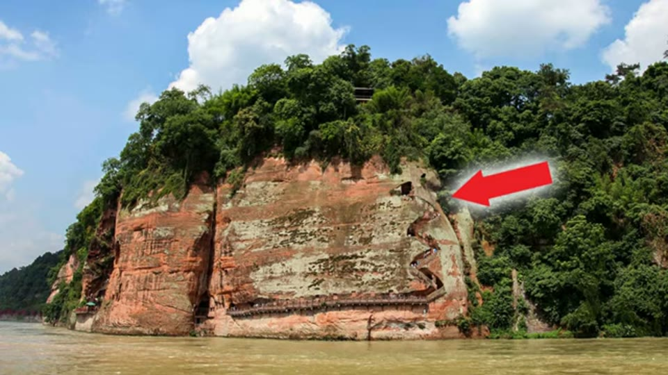
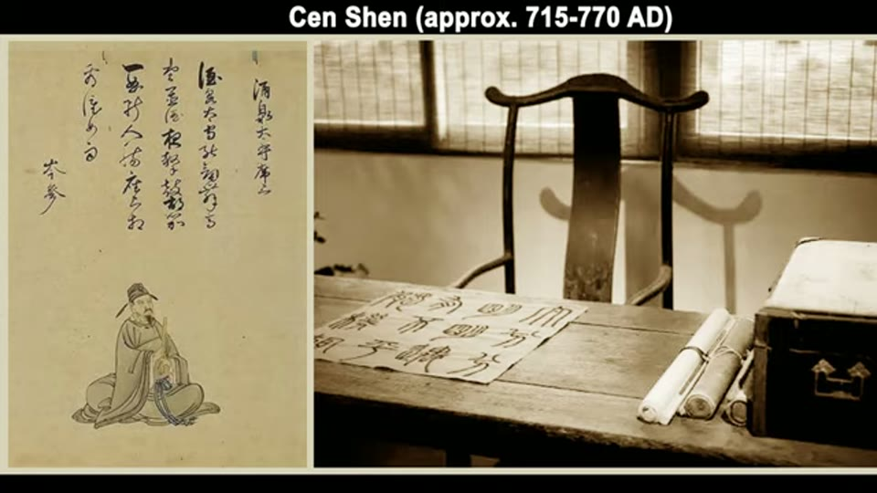

Curious Being
Hidden Stone Tunnels and Pathways Beneath the Giant Buddha
Tina · 13 min · watch on YouTube · summarised 2026-09-27
The direct continuation of the Leshan Buddha entry, and it moves onto ground the channel does not usually work: documents.
The new physical claim
03:03–07:12 Besides the zigzag staircase north of the Buddha, there is a serpent-shaped staircase on the cliff to the south, part of a route that reaches the foot of the statue through a tunnel. The official account is that this path was built in 1984 for visitors, and she says she could find nothing further about its design or construction.
Her case that 1984 was restoration rather than excavation:
- Approval. She doubts a committee would authorise cutting a tunnel beside a world-famous 1,200-year-old statue merely to give tourists another route.
- A photograph from three years earlier already shows the path's end point at the Buddha's left foot.
- Capability. 1984 was six years into the Chinese economic reform, with most industry still early-stage, and she doubts machines that leave these marks were available.
- Access. The tunnel is narrow and the staircase is on a cliff face. The hard-rock machines that make such marks are large; there is nowhere to stand one.
- Older images. A 1930s photograph she reads as showing an outline of the serpent stair; pre-pathway photographs located against an arched niche, which zoomed show "a faint trace"; blurry 1970s footage in which she says we "almost see" the path.
Her own language there is tentative, and the entry keeps it that way.

A second staircase and a tunnel reach the foot of the Buddha from the south side, officially built for visitors in 1984.
The documents, which are the reason to keep this entry
07:13–09:31 She asks the obvious objection against herself — if the site was already worked, why is there no record — and then goes looking.
Lingyun Temple was built two centuries before the Buddha, and the Buddha was treated as an addition to the temple rather than the other way round.
The first poem. The poet is named on screen as Cen Shen, approximately 715–770 CE. He describes climbing the cliff to the mountain-top temple with great effort, feeling as though hanging in midair. He names two sites on Mount Lingyun near the temple. He does not mention the Buddha — although on her dating it would already have been under way for some years. Her reading: he climbed the serpent stair on the far side, because anyone on the zigzag stair beside the statue would have said so.
The second poem. Decades later a poet she gives as Simashu describes climbing steep stone stairs on a path "that belonged to birds", then the golden body of the giant Buddha opening up the green cliffs, and thousands of niches with candles and incense. Her reading: by now the statue is well advanced, and this poet came up from the river by the Buddha's feet.
Together, she argues, at least one of the two cliff staircases existed before the Buddha was finished.
The dedication inscription. The completion was marked by an official she gives as Weigao, who funded the final stage. She puts her own translation on screen:
"at this mountain which has the turbulent current and steep cliffs, it is said that the rock can be changed and drop into the river to calm it. If (we) open up / widen the kind appearance, (with) the fine contour, (we) can achieve the good cause and gather all the forces needed…"
She reads "the fine contour" as implying shapes already present on site that the builders planned to use.

A Tang poet who climbed to the temple wrote about two sites on the mountain and did not mention the Buddha.
The argument from where the stair is
09:38–10:36 Suppose there was no niche and no stair before the project. Work began at the top and went down, so cutting a zigzag stair as a shortcut to the work face is reasonable. But why cut it on the north side of the niche, when there was no niche? The sensible place for a stair would be the river cliff. She takes the stair's position as evidence that the niche was already there.
What you can check yourself
- Both poems are in the Tang corpus and can be read in full, in the original, with their dates. This is the most checkable material in any Leshan video and it does not depend on any photograph.
- The dedication inscription exists and has a published text. Her rendering is her own and can be set against a scholarly translation.
- The 1981 photograph — three years before the stated construction — is either showing the path's end point or it is not, and it is a single image anyone can examine.
- The tunnel and both staircases are open to visitors, so the marks can be photographed and measured directly.
- Lingyun Temple's founding date relative to the Buddha is ordinary published history.
- The stone tombs on Mount Lingyun she mentions at the end are dated by grave goods to about 1,800 years, which is an excavation record.
What the video does not settle
- The first poem is an argument from silence, and the dates make it weaker rather than stronger. Cen Shen's dates are on screen: he died around 770. The Buddha was begun in 713 and finished in 803, so a poem from his lifetime falls at most sixty years into a ninety-year project — an unfinished statue, worked from the head down, very likely scaffolded. A poet writing about a visit to a mountain-top temple has no obligation to inventory a building site on the cliff below. The video treats his silence as evidence the Buddha was not there; the same silence fits a Buddha that was there and not yet worth describing.
- The poems themselves are never shown. What appears on screen is a painted portrait of Cen Shen and a staged photograph of a desk with scrolls. The text a reader would need to check any of this is not put up.
- The inscription is doing more work than a translation can bear. The quoted English is hers, with bracketed insertions, and the whole inference rests on the phrase "the fine contour". A reading that specific needs the original text and a philologist, and the video offers neither.
- "Machines like this were not available in 1984" is asserted. Tunnels and cliff stairs are routinely cut with hand-held rock drills and controlled blasting, which China had long before 1984, and neither needs a machine to be stood anywhere. The argument assumes the marks require the one method she has in mind.
- The photographic evidence is described in her own hedged terms — "seems to reveal", "a faint trace", "we almost see". On that basis it establishes very little, and the video treats the accumulation of three weak images as stronger than any one of them.
- The stair-position argument assumes a fixed order of work. A niche and an access stair cut as one project, top down, would produce the same arrangement; nothing requires the stair to have come first.
- The approval argument is speculation about 1980s heritage administration with no source, and it cuts both ways: a 1984 project building a visitor route beside a protected monument is exactly the kind of thing that generates a paper trail, which she says she could not find.
- Cen Shen is named and dated on screen, so that one is checkable. The other two names are only spoken: Weigao is very likely Wei Gao, the Tang military governor of Jiannan, and the second poet is given only as Simashu. Neither has been checked against a Tang anthology.
- The mortar argument is restated, not extended. The claim that mortar is impermeable and causes drainage problems inside the statue is offered without measurement or a conservation report.